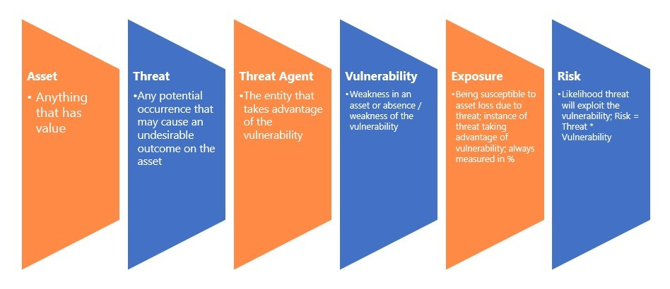
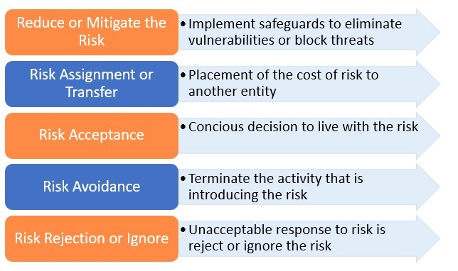
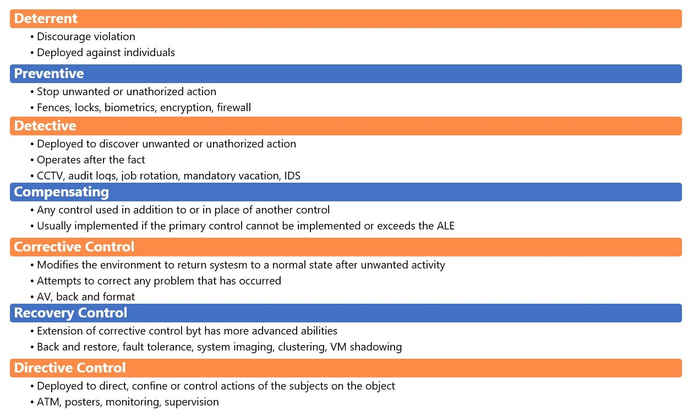
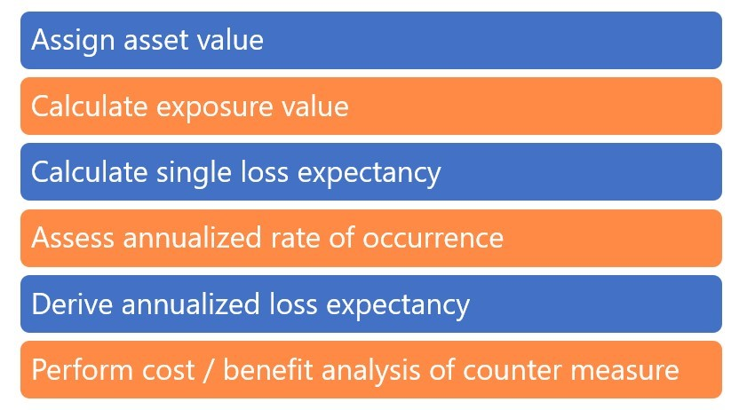
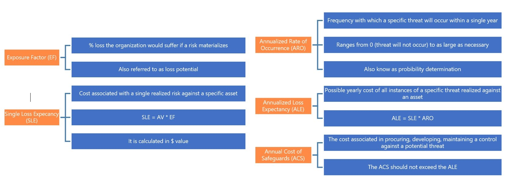
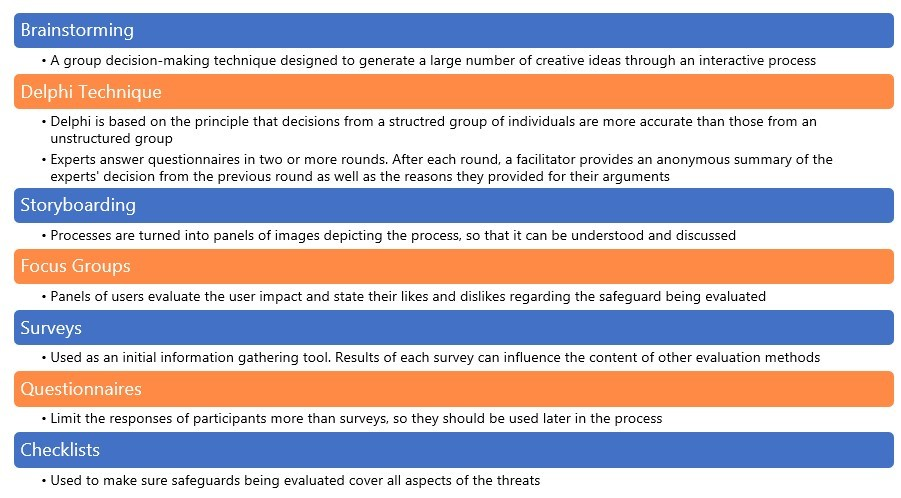
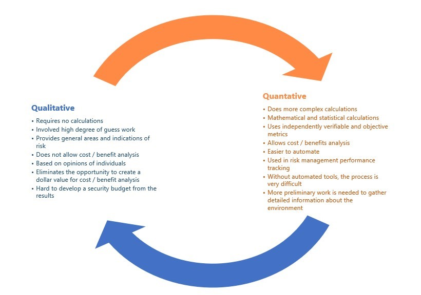

Introduction
bb1840e4-5425-49a3-9d75-477b8f016ff8
Welcome to the Organizational Risk Management and Policies Practice Lab. In this module, you will be provided with the instructions and devices needed to develop your hands-on skills.
dc640c20-9434-45ea-b7c2-6d4d6a196bfc
Learning Outcomes
In this module, you will complete the following exercises:
- Exercise 1 - Risk Types and Risk Management Strategies
- Exercise 2 - Risk Analysis
- Exercise 3 - Disasters and Business Impact Analysis
- Exercise 4 - Personnel Controls
- Exercise 5 - Third-Party Risk Management
- Exercise 6 - Data Management
- Exercise 7 - Credential Policies
- Exercise 8 - Organizational Policies
After completing this module, you should have further knowledge of:
- The Process of Identifying and Assessing Risk
- Handling Risks
- Risk Analysis
- Quantitative vs. Qualitative Risk Analysis
- Business Continuity and Disasters
- Acceptable Use Policy (AUP)
- Job Rotation
- Mandatory Vacation
- Separation of Duties
- Least Privilege
- Clean Desk Space
- Background Checks
- Non-disclosure Agreement (NDA)
- Social Media Analysis
- Onboarding
- Offboarding
- User Training
- Diversity of Training Techniques
- Vendors
- Supply Chain
- Business Partners
- Service Level Agreement (SLA)
- Memorandum of Understanding (MoU)
- Measurement Systems Analysis (MSA)
- Business Partnership Agreement (BPA)
- End-of-Life (EOL)
- End of Service (EOS)
- Non-disclosure Agreement (NDA)
- Classification
- Governance
- Retention
- Personnel
- Third-party
- Devices
- Service Accounts
- Administrator/Root Accounts
- Change Management
- Change Control
- Asset Management
Exam Objectives
The following exam objectives are covered in this lab:
5.3 Explain the importance of policies to organizational security.
- Personnel
- Diversity of Training Techniques
- Third-party Risk Management
- Data
- Credential Policies
- Organizational Policies
5.4 Summarize risk management processes and concepts.
- Risk Types
- Risk Management Strategies
- Risk Analysis
- Disasters
- Business Impact Analysis
Note: Our main
focus is to cover the practical, hands-on aspects of the exam
objectives. We recommend referring to course material or a search engine
to research theoretical topics in more detail.
Lab Duration
It will take approximately 45 minutes to complete this lab.
6cde82b4-969e-4ba2-9a1b-b030a82e21d0
Help and Support
For more information on using Practice Labs, please see our Help and Support page. You can also raise a technical support ticket from this page.
Click Next to view the Lab topology used in this module.
d2c53300-f951-45a9-9aa4-3d4ecae69e11
Lab Topology
This module contains supporting materials for Security+.

Click Next to proceed to the first exercise.
<
Home |
README >
CompTIA Security+ Practice Labs
Exercise 1 - Risk Types and Risk Management Strategies
Risk refers to the likelihood of exploitation of a
vulnerability. There are different types of risks based on the attack
factors and threat agents. Risk management strategies aim to minimize
threats.
In this exercise, risk types and risk management strategies will be discussed.
Learning Outcomes
After completing this exercise, you should have further knowledge of:
- The Process of Identifying and Assessing Risk
- Handling Risks
Your Devices
This exercise contains supporting materials for Security+.

Learn the Process of Identifying and Assessing Risk
What is a Risk?
Risk refers to the possibility or likelihood that a threat would exploit a vulnerability.
Risk = Threat * Vulnerability
Risk Types
Internal Vs. External
Internal risks are risks that an organization can
control. For example, an organization might assess the risk of
implementing a web application firewall to ensure that the applications
are not directly exposed to the internet. On the other hand, external
risks cannot be controlled by the organization. For example, an
organization cannot control natural disasters that could affect the
organization's systems.
Multiparty
The involvement of a larger number of parties
increases the impact of risks since each party has different objectives.
Conventional risk management techniques might not be the solution for
multiparty risks. Risk responses taken by one party may introduce
additional risks to the organization. A systematic process of managing
risks in a multiparty environment is thus required.
Intellectual Property Theft
Intellectual property refers to copyrights,
trademarks, patents, trade secrets, brand names, etc., that an
organization holds. Failure to protect intellectual property could
result in costly damage to the organization.
Software Compliance / Licensing
Most often, organizations use third-party licensing
solutions to manage licenses. Such solutions are effective in
identifying the license requirements and compliance information. It also
aids in configuration management that allows the figuring out the total
number of licenses installed against the license procured.
Risk Terminologies
- An asset is anything that has value.
- A threat is a potential occurrence that may cause undesirable outcomes or harm to an asset.
- An entity that takes advantage of a vulnerability is called a threat agent.
- Vulnerability refers to a weakness in a system.
- Exposure is being susceptible to a loss because of a vulnerability.
- Anything that removes or reduces the severity of a vulnerability and protects the assets against a threat is called a safeguard.
Figure 1.1: Showing the Risk Terminologies, i.e. Asset, Threat, Threat Agent, Vulnerability, Exposure, Risk, and Safeguard.
Risk Management Strategies
Risk assessment identifies vulnerabilities and
threats and assesses the possible repercussions to decide where to
implement the security controls.
Handling Risks
Risk acceptance refers to not take any action against the identified risk and accept it as it is.
Risk avoidance terminates the activity that introduces the risk.
When a risk is transferred to another entity, it is referred to as risk transfer.
When controls or safeguards are put in place to eliminate vulnerabilities and threats, it is called risk mitigation.
Risk rejection refers to recognizing the risk element and not taking any action to address it.
Cybersecurity insurance is usually provided to
organizations to protect them from the effects and consequences of
vulnerabilities and threats, thereby reducing risks.
Figure
1.2: Showing a diagrammatic representation of the Risk management
strategies; Reduce or Mitigate the Risk, Risk Assignment or Transfer,
Risk Acceptance, Risk Avoidance and Risk Rejection or Ignore.
There are three categories of risk mitigation controls:
- Administrative Controls
- Technical Controls
- Physical Controls
These are the different control types for risk mitigation:
- Deterrent Control
- Preventive Control
- Detective Control
- Compensating Control
- Corrective Control
- Recovery Control
- Directive Control
Figure
1.4: Showing the Risk control types; Deterrent, Preventive, Detective,
Compensating, Corrective Control, Recovery Control and Directive
Control.
7429868b-128c-4069-95a9-7246a6a9e5a3
<
Home |
README >
CompTIA Security+ Practice Labs
Exercise 2 - Risk Analysis
Risk analysis refers to determining the risk in an
environment and associating each threat to its likelihood, damage or
cost impact and creating safeguards to prevent an exploit.
In this exercise, you will learn about types of risk analysis.
Learning Outcomes
After completing this exercise, you should have further knowledge of:
- Risk Analysis
- Quantitative vs. Qualitative Risk Analysis
Your Devices
This exercise contains supporting materials for Security+.

Risk Analysis
Risk assessment is the method of identifying
vulnerabilities, whereas a risk analysis is carried out after a risk
assessment to ensure security is cost-effective, relevant and responsive
to threats. A risk analysis helps prioritize risks, shows how to deduce
the largest risks, and how to optimally deal with said risks.
There are two types of risk analysis:
- Quantitative risk analysis
- Qualitative risk analysis
Quantitative Risk Analysis
Quantitative risk analysis is monetary in nature. It
assigns numeric values to the elements of the risk analysis. It is a
mathematical approach for conducting risk analysis. It is often easy to
understand because it uses risk calculations to predict the monetary
loss for threats.
The six common steps used in quantitative risk analysis are shown in the below image:
Figure
2.1: Showing the quantitative risk analysis steps, Assign Asset Value,
Calculate Exposure Factor, Calculate Single Loss Expectancy, Assess
Annualized Rate of Occurrence, Derive Annualized Loss Expectancy and
Perform Cost/Benefit Analysis Counter Measure.
Below are the key terms used in quantitative risk analysis:
- Exposure Factor (EF)
- Single Loss Expectancy (SLE)
- Annualized Rate of Occurrence (ALO)
- Annualized Loss Expectancy (ALE)
- Annual Cost of Safeguards (ACS)
Figure
2.2: Showing a diagrammatic representation of each quantitative risk
analysis term; Exposure Factor, Single Loss Expectancy, Annualized Rate
of Occurrence, Annualized Loss Expectancy and Annual Cost of Safeguard.
Qualitative Risk Analysis
Qualitative risk analysis is considered to be a much
softer approach to risk analysis. It does not quantify anything, nor
does it use calculations but is opinion-based. The risk is often
concluded through judgment, intuition, best practices and experience.
Some common methods used for qualitative risk analysis are as follows:
- Brainstorming
- Delphi Technique
- Storyboarding
- Focus Groups
- Surveys
- Questionnaire’s
- Checklists
Figure
2.3: Shows the quantitative risk analysis methods; Brainstorming,
Delphi Technique, Storyboarding, Focus Groups, Surveys, Questionnaires
and checklists. It also includes a small explanation of each method
underneath.
Quantitative vs. Qualitative Risk Analysis
You can either utilize Qualitative or Quantitative risk analysis methods, both having their strengths and weaknesses. Qualitative risk
analysis typically uses a high degree of guesswork. It is based on the
opinions of the individuals completing the analysis. In contrast, Quantitative uses
a vast array of data to arrive at an outcome, although it can be
difficult without the correct tools and processes in place.
Figure 2.4: Shows a diagram in which both quantitative and qualitative risk analyses are compared and contrasted.
Total Risk and Residual Risk
Total risk is the combination of threats,
vulnerabilities and asset value. Residual risk is the risk left after a
safeguard is implemented.
- Total Risk = Threats * Vulnerability * Asset Value
- Residual Risk = (Threats * Vulnerability * Asset Value) * Control Gaps
- Residual Risk = Total Risk - Countermeasures
Risk Register
A risk register is a document maintained by an
organization during a risk assessment to track issues and address
problems as they arise.
Risk Matrix/Heat Map
A risk map, also called a risk heat map, is
a tool for communicating specific risks an organization
faces. A risk map helps organizations identify and prioritize
the risks.
Risk appetite
Risk appetite refers to the level of risk an organization is prepared to accept.
Risk awareness
Risk awareness refers to accepting risk(s) and taking steps to reduce or eliminate the identified risk(s).
Regulations that affect risk posture
Many organizations, such as those in the financial
and healthcare sectors, must conform with several government regulations
for customer data security and privacy in their industry. Organizations
must be attentive in creating their policies to abide by these
regulations and should employ risk mitigation techniques to evade
violating these strict standards. Some of these regulations are PCI-DSS,
HIPAA, SOX, etc.
Health Insurance Portability and Accountability Act
(HIPAA). HIPAA is a set of compliance regulations for protecting
confidential patient data in the medical, health care, and health
insurance industries.
The Sarbanes-Oxley Act (SOX) defines standards for
publicly held companies and accounting firms for storage, access,
communications, and financial data auditing in the financial services
industry.
The Payment Card Industry (PCI) is a set of standards for companies that process credit card information to help prevent fraud.
Likelihood of occurrence
The likelihood of occurrence is the probability that a
specific risk will occur. The value can be expressed as a fraction
between 0 and 1 or as a percentage.
Impact
The impact of a risk is the consequences if it occurs (i.e., the cost of a risk).
Asset value
As part of a risk assessment, an organization will
evaluate the value of assets. The value assigned to an asset is specific
and considers tangible costs (e.g., purchase cost) as well as
intangible costs (e.g., reputation).
7429868b-128c-4069-95a9-7246a6a9e5a3
<
Home |
README >
CompTIA Security+ Practice Labs
Exercise 3 - Disasters and Business Impact Analysis
Business continuity is a process that helps maintain
the continuous operation of business-critical functions in the event of a
disaster. The main goal of disaster recovery and business continuity
plans is to minimize the immediate effects of a disaster.
In this exercise, disasters and business impact analysis will be discussed.
Learning Outcomes
After completing this exercise, you should have further knowledge of:
- Business Continuity and Disasters
Your Devices
This exercise contains supporting materials for Security+.

Business Continuity and Disasters
There are four main steps in business continuity planning:
- Project scope and planning
- Business Impact Assessment (BIA)
- Continuity planning
- Approval and Implementation
Nature of Disasters
Disasters can be natural (environmental) or
human-made. Natural disasters result from a change in the earth’s
surface or the environment and are out of human control. Examples of
natural disasters are hurricanes, earthquakes, floods, storms etc.
Human-made disasters occur intentionally or unintentionally. Some
examples of human-made disasters are terrorism, bombings or explosions,
network or infrastructure failures, hardware failures and software
failures.
Three main types of disruptions are:
Non-disaster - Disruption in a service that has a significant but limited impact on the conduct of business operations
Disaster - An event that causes the entire facility to be unusable for a day or longer
Catastrophe - Major disruptions that destroys the facility altogether
Single Point of Failure
A single point of failure is any component that can
cause an entire system to fail. If a system has data on a single disk,
the disk's failure can cause the system to fail, so the disk is a single
point of failure.
Business Impact Analysis
Business impact analysis is also termed functional
analysis. A business impact analysis identifies critical resources to
the organization and the threats posed by these resources. It assesses
the likelihood that each threat will actually occur and the impact of
those threats. The result helps in prioritizing the commitment of
Business continuity resources to various risk exposures.
There are eight important steps for conducting business impact analysis:
1. Select individuals for data gathering
2. Create a data-gathering technique
3. Identify company critical business functions
4. Identify what these resource functions depend on
5. Calculate how long functions can survive without said resources
6. Identify vulnerabilities and threats to functions
7. Calculate the risk for each business function
8. Document/report the findings to management
Recovery Time Objective (RTO) is the amount of time you think you can feasibly recover the function in the event of a disruption.
Recovery Point Objective (RPO) is the amount of data loss or system inaccessibility that an organization can withstand.
MTD is the maximum length of time a business function can be inoperable without causing irreparable harm. The Maximum Tolerable Downtime (MTD) provides valuable information when performing Business Continuity Planning and Disaster Recovery Planning.
The Mean Time to Repair (MTTR) defines how
long it will take to recuperate a particular failed system. It is the
best approximation for reconstructing the IT system so that business
continuity may happen. Mean Time Between Failures (MTBF) quantifies
how extended a new or corrected system will run before failing. It is
usually produced by a component vendor and is mostly applicable to
hardware as opposed to applications and software.
Disaster Recovery Planning
In an attempt to recover from a disaster, the following are given utmost importance:
- Identification of critical business functions
- Backups and Offsite Storage
Full Backup:
- All data is backed up and recovery is just a one-step process. However, the backup and recovery process can take a long time.
Differential Backup:
- Backups the files that have been modified since the last full backup
- When data needs to be recovered, the full backup is
put in place first; then, the very recent differential backup is placed
on top of the full backup
- Takes quite some time in the backing up stage but takes less time for restoration
Incremental Backup:
- Backups all files that have been altered since the last full or incremental backup
- Takes less time to backup when compared to differential backup but takes more time for recovery
Alternate Processing Sites
A hot site will have all adequate hardware and
critical applications and data mirrored in real-time. A hot site will
have the capacity to allow the organization to continue critical
operations within a very short period of time, sometimes in less than an
hour. A warm site is a leased or rented facility that is typically incompletely configured with some equipment but not the real computers. A redundant site obtains
data backups in real-time so that there is no loss of data in the
occurrence of a disaster. There is no such term as a duplicate site. A cold site does
not contain backup copies of data, nor does it encompass any instantly
available hardware. After a disruptive incident, a cold site will take
the longest amount of time of all the recovery solutions to the device
and recover critical IT services for the organization. It is also
considered the least expensive recovery solution. A mobile site is
a good fit for disasters such as a data-center flood where the
data-center is damaged, but the rest of the facilities and surrounding
property are intact.
A reciprocal agreement is formalized in the
form of a contract written to obtain support from outside organizations
in the occurrence of a disaster. They are also called Mutual Aid
Agreements (MAAs) and are organized so that each organization will
support the other in an emergency. All other options are made-up terms.
Database Recovery Techniques
Disk Duplexing:
- More than one disk controller will be in use.
- Upon failure of one controller, the other one is available instantly.
Disk Shadowing:
- Data is dynamically generated and maintained on two or more alike disks.
- Used to guarantee the availability of data and to
offer a fault-tolerant solution by replicating hardware and sustaining
more than one copy of the information
- It offers online backup storage
- It can enhance read operation performance
- It is a costly solution because two or more hard drives are used to contain the exact same data
- Companies opt for this model if fault tolerance is necessary
Electronic Vaulting:
- Creates copies of files as they are generated or altered and periodically transmits them to an offsite backup site
- An approach for transferring bulk data to offsite facilities for backup
- The transmission happens in a phased manner
Remote Journaling:
- This is an approach for transmitting data offsite,
usually by moving the journal or transaction logs to the offsite
facility and not the real files. These logs include the delta that has
taken place on the actual files
- Journaling is effective for database recovery, where
only the reapplication of a sequence of changes to individual records
is necessary to resynchronize the database.
- It takes place instantaneously and transmits the file deltas
Business Resumption Plan - Focuses on
recreating the necessary business process instead of focusing on IT
Component. It is process-oriented instead of procedural-oriented.
Continuity of Operations Plan (COOP) - Establishes senior management and a headquarters after a disaster and outlines roles and authorities, orders of succession.
IT Contingency Plan - Plan for systems, networks and major application recovery procedures after disruptions.
Crisis Communication Plan - Consist of
internal and external roles and communication structure. Identified
specific individuals who will interact with external entities.
7429868b-128c-4069-95a9-7246a6a9e5a3
<
Home |
README >
CompTIA Security+ Practice Labs
Exercise 4 - Personnel Controls
Several organizations put different types of security
controls in place to protect and safeguard their data. Other than the
security controls, several security methods are used to ensure that
there is no threat generating from inside the system. Organizations use
various methods, such as mandatory vacations and job rotations, to
protect the data from such internal threats. In this exercise, different
methods of personnel controls will be discussed.
Learning Outcomes
After completing this exercise, you should have further knowledge of:
- Acceptable Use Policy (AUP)
- Job Rotation
- Mandatory Vacation
- Separation of Duties
- Least Privilege
- Clean Desk Space
- Background Checks
- Non-disclosure Agreement (NDA)
- Social Media Analysis
- Onboarding
- Offboarding
- User Training
- Diversity of Training Techniques
Your Devices
This exercise contains supporting materials for Security+.

Acceptable Use Policy (AUP)
As the name suggests, AUP defines what is appropriate
for a user to do in the context of the IT systems. It defines some of
the key aspects of IT system and network usage, such as:
- The level of usage of the IT systems and network
- The definition of appropriate usage of the IT systems and network
- What is user prohibited to do
- The type of software which should or should not be used
AUP intends to define the appropriate behavior of a
user when using the IT systems and network. For example, the user should
NOT download and install any pirated applications. Another example is
clearly defining that the organization’s email should only be used for
official purposes.
Job Rotation
An organization may also opt for the job rotation
policy, which allows it to switch users between jobs or tasks. For
example, if John was performing a certain task, Josh might be assigned
to do the same task while John is moved to another task. The purpose of
job rotation is to detect fraud or any undesirable activities.
Mandatory Vacation
Several organizations use a mandatory vacation policy
to send a person on leave and allow someone else to perform the same
task. The mandatory vacation policy intends to detect fraud and perform
an audit of the activities that have been performed. An audit in the
absence of the task owner helps the organization discover if any illicit
activities may have been performed.
Separation of Duties
The Separation of Duties policy is commonly applied
in most organizations to prevent fraud or illicit activities. This
policy intends to avoid giving complete authority to one individual. For
example, as an employee, if you submit a reimbursement voucher, it goes
to your manager, who approves it. After your manager, it is the
department head who needs to approve it.
Least Privilege
The least privilege policy defines that a user should
have only the level of privileges required to perform a specific task.
No user should be given any extra privileges just because of their role
or superiority within the organization. For example, if a user needs to
only view graphics in a repository on a file server, then the user
should only have read-only privileges.
Clean Desk Space
Most users often have their desks cluttered with
papers and other material. The clean desk policy intends to ensure that
all papers and other materials are removed when they are not being used.
Also, when a user moves out of the desk, the papers, specifically
confidential documents, should be removed from the desk and locked up in
a safe enclosure.
Background Checks
Every organization hires new individuals. The
background policy intends to ensure that the individual has a clean
track record. With the help of background checks, the human resources
(HR) team can identify if the individual has any type of criminal
history. In most cases, the consent is taken from the person being hired
as an employee. The person must fill in documentation and provide
supporting documents, which are then verified using the background check
process. Most organizations hire an external agency that is specialized
in background checks.
Non-disclosure Agreement (NDA)
As part of an organization, you may require an
external vendor to work with you. However, before any information is
shared with the vendor, you need to get the NDA signed. An NDA requires
you and the vendor, both the parties, to agree that any confidential
information of either of the parties should not be disclosed. An NDA may
also require removing information after the project or a specific task
is over. It prohibits either party from sharing confidential information
with third parties without written consent. It also defines the meaning
of confidential information. An NDA can be unilateral, which means that
one party defines the terms. It could also be bi-lateral, which means
both parties share confidential information and are equally responsible
for the terms and conditions. The third type is multilateral, in which
one party discloses the confidential information, and two or more
parties commit not to misuse it or share it with any third party.
Social Media Analysis
When an organization is in the process of hiring a
new employee, it is not always possible to determine their behavior and
personality through the interview process. Organizations can use social
media, for example, Twitter or Facebook, to get a clearer picture of the
potential employee’s personality traits and behavior. A good example is
that if the individual posts inappropriate pictures or comments, it can
lead the employer to not employ the individual.
Onboarding
Imagine that an organization hires you. On your first
day, you have no clue what to do and whom to contact. The HR team is
too busy to help you out. This can be an issue for the hired individual,
which is you in this case. It also adds a negative impression on the
organization. The HR teams in most organizations have onboard processes
and procedures, which help the individual settle down. The onboarding
processes also include the IT part. When you complete your joining
formalities, the IT team creates your user account, provides role-based
permissions, and assigns you a system, which can be a desktop or a
laptop.
Offboarding
Just like onboarding, the HR team usually has
offboarding processes and procedures. IT again plays a critical role.
For example, the IT team will disable or delete the user accounts, take
handover of your system and other devices, such as a mobile phone. As
part of the offboarding process, a user may be required to complete
documentation that serves as an input for the next employee who will
replace the user.
User Training
Training is critical for nurturing your employees.
You would find training to be present in all operations of your
organization. For example, when you join, there is an induction program
run by the HR team. The IT team may put you through security training to
help you safeguard your information. An organization may use different
types of training methods. Let’s look at some of the key training
methods.
Gamification
Gamification is one of the last training methods that
are now being widely used. You have to attend the training and answer
some questions. Based on your performance in training, you get some type
of reward in the form of badges. For example, you have a Learning
Management System (LMS) in your organization. You have been asked to
attend the Security Foundations course and attempt a quiz. If you pass
the quiz, you get a badge or any other type of reward, such as a coin.
Some organizations provide several benefits in exchange for badges.
Capture-the-Flag
Capture-the-flag events are mostly security training.
You have to perform certain activities to capture a flag. You might be
asked to play the role of a hacker, which is a red team and penetrate
the network. You may also be asked to defend the network from the red
team by playing as part of the blue team. The more flags you capture,
the more points you gain. You have to attempt to gather maximum points.
Phishing Campaigns
Organizations have started to test their user
security posture by running phishing campaigns, which allow them to send
fake phishing emails to internal employees. The intent is to send out
phishing emails to the employees and click on the embedded links. After
the users click, they may be taken to a website where they enter their
credentials. The security team wants to track users who are easy prey
for hackers.
Computer-based Training (CBT)
If you have watched one or more YouTube videos, you
have attended the computer-based training. In the old training style,
you had to get into a classroom and then attend the training.
Computer-based training gives you a free hand, and you can attend this
training at your own will and in your free time. You can also purchase
online courses with no instructor, but you have to attend the training,
either delivered via a program or through videos.
Role-based Training
Role-based training is designed to train users based
on their roles or functions within the organization. For example, if a
user is promoted to the project manager role, the user is put through
project management training. You may also have vendors connecting to
your network. They are put in IT training to ensure that they follow the
defined processes and procedures.
Diversity of Training Techniques
Different users within an organization may have
different training needs. For example, a user may not like to sit
through the classroom training. You can use CBT training to train the
user. It may not be possible every time, but the organization should
have different training methods to train their users. It is also about
the time when users are expected to undergo training. If the programming
team is busy on a critical million-dollar project, they should not be
forced to undergo the training.
7429868b-128c-4069-95a9-7246a6a9e5a3
<
Home |
README >
CompTIA Security+ Practice Labs
Exercise 5 - Third-Party Risk Management
In an organization, you may be dealing with vendors,
business partners, and other associates. You need to ensure that there
are enough personnel controls to ensure that the data within the
organization is safeguarded. You may have to use different types of
agreements with external entities.
In this exercise, you will learn about the different
entities you will interact with and the types of the agreement you need
to get into.
Learning Outcomes
After completing this exercise, you should have further knowledge of:
- Vendors
- Supply Chain
- Business Partners
- Service Level Agreement (SLA)
- Memorandum of Understanding (MoU)
- Measurement Systems Analysis (MSA)
- Business Partnership Agreement (BPA)
- End-of-Life (EOL)
- End of Service (EOS)
- Non-disclosure Agreement (NDA)
Your Devices
This exercise contains supporting materials for Security+.

Vendors
Vendors are external, third-party entities that will
often connect with your network or have access to your data. You may
also have an external team sitting on the premises of your organization.
Following entities can be considered as vendors:
- IT hardware and software supplier
- Travel desk from another organization
- A visiting consultant
With the vendors, the organization and its users must
understand the associated risks. They may have access to your data, and
therefore, enough security controls and policies should be in place to
safeguard your data. For example, if an external consultant is visiting
your office, they may not be allowed to plug in their laptop to the
network.
Supply Chain
Supply chain is a process in which an organization
creates a product. In this process, you may have only the internal
people involved or have external entities working with the internal
team. For example, your organization creates a game, which is shipped to
the customers via DVDs. A vendor is responsible for collecting the
boxes of DVDs to deliver to the end-users or the dealers.
It is not easy to implement security processes in the
supply chain. You have to implement internal security processes and
policies and focus on implementing the same for the external vendors.
For example, you may have a documented process to allow the vendor to
enter only a specific part of the premise. Then, the vendor must have a
badge issued to get into that particular part.
Business Partners
Your organization may also have business partners
with whom you need to share information. To do this, you need to
establish a secure channel for sharing information. For example, you can
implement a site-to-site VPN to securely share information. You should
monitor the VPN connections and enable auditing to ensure that the
business partner only accesses relevant data. There should be an
agreement to define the data to be shared between both parties.
Service Level Agreement (SLA)
A Service Level Agreement or SLA is a document that
defines the required service level from a service provider. There are
measurable criteria that must be met to keep the services at an optimal
level. For example, if you hire an external IT company to manage your IT
infrastructure, you will define an SLA that will contain various
clauses with measurable criteria, such as server uptime to be 99.999.
The SLA document may also contain a penalty clause imposed on the
service provider if the required services do not meet the defined
criteria.
Memorandum of Understanding (MoU)
A memorandum of understanding (MOU) is an agreement
signed between two parties for a mutual benefit. An MoU does not have
any legal binding, and therefore, it is used when two or more parties
want to work together for a specific purpose. It can also be called the
informal letter of intent, which defines the intent of both parties. An
MoU is usually between two parties. If there are three parties involved,
it is called a tri-party MoU.
Measurement Systems Analysis (MSA)
An MSA helps you evaluate and assess a measurement
system used to make a business decision. To ensure that the measurement
system itself is accurate, you use the MSA to evaluate it. Most
organizations use a measurement system to make their business decision.
However, the organization may end up making wrong business decisions if
the measurement system is inaccurate. You can use MSA to ensure that the
measurement system is accurate by assessing it thoroughly.
Business Partnership Agreement (BPA)
When two or more partners join a partnership, you
need to use the business partnership agreement. It is a legal document
that is used between the partners. Some of the key components of BPA
are:
- Stakes of each partner
- Terms
- Conditions
- Expectations of each partner
- Decision-making authority of a partner
- Contingency arrangements
End-of-Life (EOL)
Each system or software has end-of-life. Your
organization is not going to develop every application they use
internally. The organization will purchase and use various off-the-shelf
applications. However, each application, such as an operating system,
has end-of-life. When end-of-life occurs, the developer organization,
such as Microsoft, stops selling. They expect the users to upgrade to
the new versions, which is always recommended for usability and security
purposes.
For example, if you are using Office 2010, it had
reached its end-of-life on October 13, 2020. The developer organization
makes an advanced announcement with sufficient time in hand for the
users to switch to the newer version. However, the existing product
continues to function.
End of Service (EOS)
After the EOL, the developer organization will stop
providing support for the product. In many cases, EOL and EOS can both
take place on the same date. For example, for Office 2010, EOL and EOS
occurred on October 13, 2020. The developer organization then does not
provide any updates or upgrades. For an organization, they should plan
to upgrade the older applications that have reached EOL and EOS.
Non-disclosure Agreement (NDA)
As part of an organization, you may require an
external vendor to work with you. However, before any information is
shared with the vendor, you need to get the NDA signed. An NDA requires
you and the vendor to agree that any confidential information of either
of the parties should not be disclosed. An NDA may also require removing
information after the project or a specific task is over. It prohibits
either party from sharing confidential information with third parties
without written consent. It also defines the meaning of confidential
information. An NDA can be unilateral, which means that one party
defines the terms. It could also be bi-lateral, which means both parties
share confidential information and are equally responsible for the
terms and conditions. The third type is multilateral, in which one party
discloses the confidential information, and two or more parties commit
not to misuse it or share it with any third party.
7429868b-128c-4069-95a9-7246a6a9e5a3
<
Home |
README >
CompTIA Security+ Practice Labs
Exercise 6 - Data Management
Each organization has some type of confidential and
sensitive information, such as vendor contracts or employee information.
The organization needs to use different methods to ensure proper data
management, which eventually leads to secure data. The data must be
properly classified and then accordingly safeguarded. For example, there
will be some information that can be public, such as marketing material
or the price list. Others may be internal or restricted.
In this exercise, you will learn about various data
management methods that can be used to safeguard confidential and
sensitive data.
Learning Outcomes
After completing this exercise, you should have further knowledge of:
- Classification
- Governance
- Retention
Your Devices
This exercise contains supporting materials for Security+.

Classification
To properly safeguard the data, an organization
should define the data classification policy, differentiating the data
types and how each type needs to be secured. Even though different
organizations can classify data differently, the most widely used
classifications are:
- Public: can be put on a Website or shared
with other people, such as external users or customers. This type of
data can be publicly disclosed without any security risk. An example of
such type is marketing material and product price list.
- Internal: is restricted to only internal use.
The internal users have access to this type of data. An example is an
organizational chart.
- Confidential: is in control of a few users.
There may be an adverse effect on internal operations if such data is
leaked to the public. An example is vendor contracts.
- Restricted: is highly sensitive and
confidential. If this type of data is leaked to the public, it may put
the organization at legal and financial risk. An example is the credit
card information of customers.
Governance
Data governance is a method of safeguarding the data
by using processes, policies, user roles, and different types of
metrics. Data governance is driven by the data governance policy, which
controls the following:
- Actions on the data
- Who can take actions
- Which type of data
- Which type of methods
- The procedures used to manage data
The data governance policy may be driven by certain
rules and regulations, such as PCI-DSS or HIPAA, which define how the
data should be collected, stored, used, and discarded.
Retention
Data retention policy defines how long an
organization can retain data. It could be due to law or regulation that
an organization may have to retain data. For example, your organization
may be required to retain data for up to seven years.
Organizations cannot retain data forever due to space
and financial constraints. Therefore, the data retention policy also
defines how to dispose of the data after its retention time.
7429868b-128c-4069-95a9-7246a6a9e5a3
<
Home |
README >
CompTIA Security+ Practice Labs
Exercise 7 - Credential Policies
In a domain environment, it is always good to store
the password on a centralized server. The applications and databases
should not store the password locally. As an organization, you need to
have credential policies in place. These policies define how the
passwords will be stored, whether they will be encrypted or not, and
whether the authentication process is encrypted.
In this exercise, you will learn about different credential policies.
Learning Outcomes
After completing this exercise, you should have further knowledge of:
- Personnel
- Third-party
- Devices
- Service Accounts
- Administrator/Root Accounts
Your Devices
This exercise contains supporting materials for Security+.

Personnel
Users are a key part of a networked environment.
Users can access networked applications or authenticate themselves, and
they need to have user credentials, including a username and a password.
A domain controller maintains the database of all users that have been
created on it. When a user authenticates, the user credentials are
verified against the database on the domain controller.
In a network environment, you will also have
applications, which may have their authentication schema. You should
always attempt to integrate them with a directory service, such as
Active Directory and use single sign-on. If possible, the users should
be authenticated using multi-factor authentication.
All such information must be documented. You should
have policies that define the password age, number of invalid log-on
attempts, and lockout duration. Active Directory allows you to force
such policies on the user accounts using Group Policies.
Third-party
You may also have third-party accounts that connect
to your network. To ensure that the third-party accounts are not
misused, you should enable two-factor or multifactor authentication. If
you are using a directory service, you should keep the third-party
accounts in a separate container, such as an Organizational Unit, and
impose strict policies. Different organizations have different security
policies for managing third-party accounts. Whichever practice is
followed, it must be documented and implemented, for example, using
Group Policies.
Devices
You may need more policies for devices like mobiles
and tablets that may connect to your network. The device policies that
you create may include some of the key pointers, such as:
- Deploy a certificate on each device that should identify the device to be a trusted hardware
- Implement screen locks or some form of authentication, such as fingerprints
An organization can use other methods, such as Mobile
Device Management (MDM), to manage these devices. You can use features
like remote wipe, geolocation, geofencing, and full disk encryption. You
can also enable geolocation-based authentication. This means that if
you define a specific location, let’s say the user’s home address as the
geolocation; the user authentication will fail if a user attempts
authentication using the device from a different location.
Service Accounts
Service accounts are mainly used with applications
and services. The users never use them. If you need to use an account
for a database, you should use the service account, which has a static
password that does not need to be changed. A service account never
prompts for a password change. It may simply expire. For example, you
are using a service account with an application programming interface
(API). The password expires after 90 days. The API will stop functioning
as the service account permissions are needed to fetch data from a
remote server. In such a scenario, you should have a policy that should
define the time duration when the service account password is due for a
change. Even though you can set the service account password to never
expire, it is not good security practice.
Administrator/Root Accounts
On a local system, a device, or a network, it is
important to safeguard the administrator or the root access. You should
never be using any user account with administrative privileges. In
Windows, the Administrator is the default user with full privileges. In
Linux and Unix environments, the root is the superuser with
administrative privileges. If any of these accounts is compromised,
depending on where it belongs, a local system or the network, you might
put the environment at stake. If you need to use these accounts, ensure
that you have multi-factor authentication enabled. You should also
change the password regularly.
7429868b-128c-4069-95a9-7246a6a9e5a3
<
Home |
README >
CompTIA Security+ Practice Labs
Exercise 8 - Organizational Policies
Each organization has assets, which could be
hardware, software, and even employees. A certain set of organization
policies define how the changes within the IT infrastructure should
occur and the processes that drive the change. Making changes to the
existing IT infrastructure can be dangerous. You would never know the
outcome of a particular change that you are making. Therefore, certain
methods and policies can be used to ensure that an organization's assets
are safeguarded from any negative outcomes.
In this exercise, you will learn about organizational policies.
Learning Outcomes
After completing this exercise, you should have further knowledge of:
- Change Management
- Change Control
- Asset Management
Your Devices
This exercise contains supporting materials for Security+.

Change Management
IT teams across organizations can sometimes add or
remove applications, systems, and servers without following the change
management process. If things go wrong, then the recovery time is much
higher than anticipated. In some cases, there is no fallback method to
go back to the previous state before the change.
The change management process allows you to implement
changes within the IT environment systematically. When following a
change management process, you know:
- What needs to be implemented
- Scope of the change being implemented
- What will be the impact of the change with new implementation as the change has already been tested thoroughly
- You know the process of implementation - installing an enterprise application or installing a new server
- You know the fallback process - if anything goes
wrong during the change implementation, you can revert to the previous
state. This is known as the fallback process.
You document the change after it is successfully
implemented. In a scenario where there is no change management process,
you do not know the outcome of the change implementation. There are
50-50 chances that it will fail or pass. You also do not have historical
data about a similar change.
Change Control
Change control is the process of implementing a
change. It monitors the entire process of change implementation. The
change control process starts with scoping the change. You define a
clear scope of the change that needs to be implemented. For example, you
need to implement an update to the servers. You define the scope and
include the servers as part of the scope. You then define the plan for
rolling out the update. The plan should also include the rollback plan,
which needs to be implemented if the change has a negative impact.
After this, you need to test the update in a test
environment. After the testing is successful, you need to get the change
request approved by the change committee, which reviews your request
with all the artifacts like the testing results. If the results are
found satisfactory, then the change is approved. After the change is
implemented, the change request is updated with the results. All the
information about the change is documented.
Asset Management
An organization must track its assets, which are in
the form of hardware, software, and data. With the implementation of
asset management, you should track your tangible assets, such as
software and hardware. There are applications available that can scan
through the systems on the network and track the application licenses
and collate their records in a single place. You can then verify if the
systems are using legitimate applications or have exceeded the number of
licenses.
Similarly, you need to track your data and most
importantly, you need to know who is using which pieces of data. You can
implement Data Loss Prevention and monitor your data. It prevents
unauthorized sharing of information.
There are different types of asset management, such
as digital asset management, IT asset management, and physical asset
management.
7429868b-128c-4069-95a9-7246a6a9e5a3
d31298f5-3011-4089-bf06-fbf08c44a7f9
Keep all devices that you have powered on in their current state and proceed to the review section.
Review
Well done, you have completed the Organizational Risk Management and Policies Practice Lab.
c6e74811-6d1f-4779-94c2-34fcca239022
a1675f78-c0b8-48d2-a137-d31b5c815957
8f7f2648-1083-4c63-bb37-ee6948a4afbd
2c5fb39c-e35d-46b3-9476-242ac8ed834c
4d8ee782-bc2e-46a6-9346-adbc124871e5
a94b8721-a5b8-4c9f-a0bb-662ea15ecdda
ded73642-8845-4083-80ab-5308bc92a765
86d4eb14-90e0-4da6-bd4e-43fe2025dd62
aaaaaaaa-1111-1111-1111-193f35a24fe3
Summary
You completed the following exercises:
- Exercise 1 - Risk Types and Risk Management Strategies
- Exercise 2 - Risk Analysis
- Exercise 3 - Disasters and Business Impact Analysis
- Exercise 4 - Personnel Controls
- Exercise 5 - Third-Party Risk Management
- Exercise 6 - Data Management
- Exercise 7 - Credential Policies
- Exercise 8 - Organizational Policies
You should now have further knowledge of:
- The Process of Identifying and Assessing Risk
- Handling Risks
- Risk Analysis
- Quantitative vs. Qualitative Risk Analysis
- Business Continuity and Disasters
- Acceptable Use Policy (AUP)
- Job Rotation
- Mandatory Vacation
- Separation of Duties
- Least Privilege
- Clean Desk Space
- Background Checks
- Non-disclosure Agreement (NDA)
- Social Media Analysis
- Onboarding
- Offboarding
- User Training
- Diversity of Training Techniques
- Vendors
- Supply Chain
- Business Partners
- Service Level Agreement (SLA)
- Memorandum of Understanding (MoU)
- Measurement Systems Analysis (MSA)
- Business Partnership Agreement (BPA)
- End-of-Life (EOL)
- End of Service (EOS)
- Non-disclosure Agreement (NDA)
- Classification
- Governance
- Retention
- Personnel
- Third-party
- Devices
- Service Accounts
- Administrator/Root Accounts
- Change Management
- Change Control
- Asset Management
Feedback
067744a4-4299-4662-b5be-04dbb636a007
Shutdown all virtual machines used in this lab. Alternatively, you can log out of the lab platform.